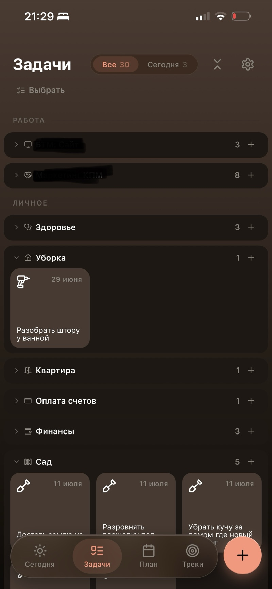

Мобильный таск-менеджер с тёплой тёмной темой: проекты, задачи на сегодня, планы и треки привычек. Дизайн интерфейса от идеи до продакшн-макетов.
Хотелось таск-менеджер, который не давит списками и не выглядит как корпоративная таблица. Тёплая тёмная палитра, крупная типографика и карточки задач с иконками категорий — приложение остаётся спокойным даже когда задач много. Ниже — ключевые экраны и решения за ними.

Главный экран группирует задачи по проектам — «Работа», «Личное», «Сад». Категории сворачиваются, у каждой свой счётчик и иконка, а карточки задач с датой и пиктограммой читаются с одного взгляда. Фильтр «Все / Сегодня» вверху переключает фокус, не уводя с экрана.
[Замените на свой второй экран и абзац: что на нём, какую задачу решает, какое дизайн-решение вы приняли и почему. Скрин подставится в рамку справа.]
[Замените на свой третий экран и абзац. Раскладка чередуется: скрин слева, текст справа — так несколько вертикальных экранов идут крупно и ритмично.]